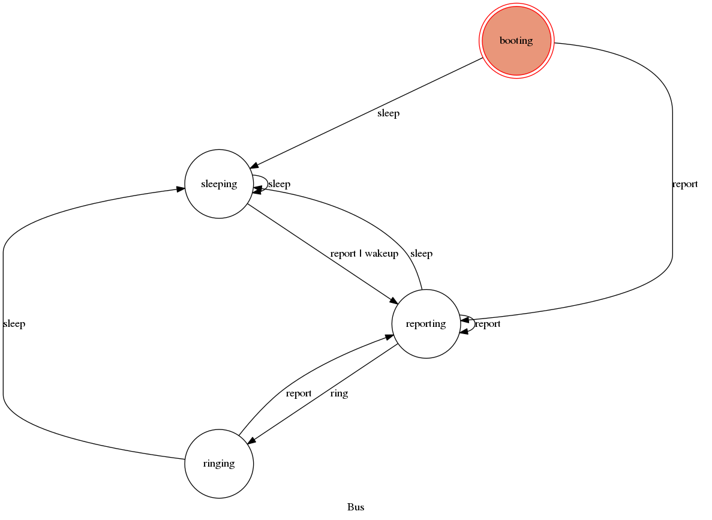

For this last example, we will create a more sophisticated server : it will
We’ll also see how to start it as a service at boot.
Components and thread are defined the same way we did in the previous tutorial
The bus is now based on a fsm (official site for more documentation)
At first, we must define state and transitions :
states = [
'booting',
'sleeping',
'reporting',
'ringing',
]
"""The tutorial states :
"""
transitions = [
{ 'trigger': 'wakeup',
'source': '*',
'dest': 'reporting',
},
{ 'trigger': 'report',
'source': '*',
'dest': 'reporting',
},
{ 'trigger': 'sleep',
'source': '*',
'dest': 'sleeping',
},
{ 'trigger': 'ring',
'source': 'reporting',
'dest': 'ringing',
},
]
And start / stop the fsm when starting/stopping the bus :
def start(self, mqttc, trigger_thread_reload_cb=None):
"""Start the bus
"""
for bus in self.buses:
self.buses[bus].start(mqttc, trigger_thread_reload_cb=None)
JNTBus.start(self, mqttc, trigger_thread_reload_cb)
self._tutorial_statemachine = Machine(self,
states=self.states,
transitions=self.transitions,
initial='booting')
def stop(self):
"""Stop the bus
"""
self.stop_check()
self.sleep()
for bus in self.buses:
self.buses[bus].stop()
JNTBus.stop(self)
We should now define actions when entering states :
def on_enter_reporting(self):
"""
"""
logger.debug("[%s] - on_enter_reporting", self.__class__.__name__)
self.bus_acquire()
try:
self.nodeman.find_value('led', 'blink').data = 'heartbeat'
self.nodeman.add_polls(self.polled_sensors, slow_start=True, overwrite=False)
except:
logger.exception("[%s] - Error in on_enter_reporting", self.__class__.__name__)
finally:
self.bus_release()
self.on_check()
def on_enter_ringing(self):
"""
"""
logger.debug("[%s] - on_enter_ringing", self.__class__.__name__)
self.bus_acquire()
try:
self.nodeman.find_value('led', 'blink').data = 'warning'
except:
logger.exception("[%s] - Error in on_enter_ringing", self.__class__.__name__)
finally:
self.bus_release()
...
The diagram :
We will now create a server script, this will allow to start our server on startup:
$ vim src/scripts/jnt_tutorial
import logging
logger = logging.getLogger(__name__)
import sys, os, re, shutil, datetime
from janitoo.runner import Runner, jnt_parse_args
from janitoo_raspberry.server import PiServer
class MyPiServer(Runner):
def __init__(self):
Runner.__init__(self)
self.server = None
#print self.options
def app_run(self):
self.server = PiServer(self.options)
self.server.start()
self.server.run()
def app_shutdown(self):
self.server.stop()
self.server = None
daemon_runner = MyPiServer()
#This ensures that the logger file handle does not get closed during daemonization
#daemon_runner.daemon_context.files_preserve=[handler.stream]
daemon_runner.do_action()
Open the init script and update the provides, descriptions and NAME:
$ vim src/scripts/jnt_tutorial.init
### BEGIN INIT INFO
# Provides: jnt_tutorial
# Required-Start: $remote_fs $syslog $network
# Required-Stop: $remote_fs $syslog $network
# Default-Start: 2 3 4 5
# Default-Stop: 0 1 6
# Short-Description: Janitoo tutorial
# Description: Janitoo tutorial appliance server
#
### END INIT INFO
NAME="jnt_tutorial"
And copy it to the right directory :
$ sudo cp src/scripts/jnt_tutorial.init /etc/init.d/jnt_tutorial
Open a new shell and launch
$ jnt_spy
This will launch a spyer for the mqtt protocol
Go to the first terminal and copy the config file to the config directory. The filename must be the same as the one using for the service name (jnt_tutorial) :
$ cd /opt/janitoo/etc
$ cp /opt/janitoo/src/janitoo_tutorial/tests/data/helloworldv3.conf jnt_tutorial.conf
Open the configuration file and update the needed parts :
$ vim /opt/janitoo/etc/jnt_tutorial.conf
[system]
service = jnt_tutorial
log_dir = /opt/janitoo/log
home_dir = /opt/janitoo/home
pid_dir = /opt/janitoo/run
conf_dir = /opt/janitoo/etc
broker_ip = 127.0.0.1
broker_port = 1883
broker_keepalive = 60
heartbeat_timeout = 10
heartbeat_count = 3
slow_start = 0.5
...
[handler_file]
class = FileHandler
level = DEBUG
formatter = generic
args = ('/opt/janitoo/log/jnt_tutorial.log', 'w')
There are many options startup like slow_start (a dedicated options for slow machines to sleep between startup steps). Look at source for list :(.
You can now starts the service :
$ sudo service jnt_tutorial start
You can look at the protocol during startup on the spyer terminal.
You can also look at logs. In a new terminal :
$ tail -n 100 -f /opt/janitoo/log/jnt_tutorial.log
Its time to query ther server. Go to the first terminal and query the network :
$ jnt_query network
You should receive the list of nodes availables on your server :
hadd uuid name location product_type
hadd uuid name location product_type
0225/0000 tutorial3 Hello world Rapsberry Default product type
0225/0002 tutorial3__temperature Temperature Onewire Temperature sensor
0225/0004 tutorial3__led Led GPIO Software
0225/0003 tutorial3__cpu CPU Hostsensor Software component
0225/0001 tutorial3__ambiance Ambiance 1 DHT Temperature/humidity sensor
You can also query a node :
$ jnt_query node --hadd 0225/0000
Check the config values :
$ jnt_query node --hadd 0225/0000 --vuuid request_info_configs
hadd node_uuid uuid idx data units type genre cmdclass help
0225/0004 tutorial3__led switch_poll 0 300 seconds 4 3 112 The poll delay of the value
0225/0004 tutorial3__led blink_poll 0 300 seconds 4 3 112 The poll delay of the value
0225/0004 tutorial3__led location 0 GPIO None 8 3 112 The location of the node
0225/0004 tutorial3__led pin 0 1 None 4 3 112 The pin number on the board
0225/0004 tutorial3__led name 0 Led None 8 3 112 The name of the node
0225/0001 tutorial3__ambiance temperature_poll 0 300 seconds 4 3 112 The poll delay of the value
0225/0001 tutorial3__ambiance name 0 Ambiance 1 None 8 3 112 The name of the node
0225/0001 tutorial3__ambiance pin 0 6 None 4 3 112 The pin number on the board
0225/0001 tutorial3__ambiance humidity_poll 0 300 seconds 4 3 112 The poll delay of the value
0225/0001 tutorial3__ambiance location 0 DHT None 8 3 112 The location of the node
0225/0001 tutorial3__ambiance sensor 0 11 None 4 3 112 The sensor type : 11,22,2302
0225/0000 tutorial3 tutorial3_temperature_poll 0 300 seconds 4 3 112 The poll delay of the value
0225/0000 tutorial3 tutorial3_temperature_critical 0 50 None 4 3 112 The critical temperature. If 2 of the 3 temperature sensors are up to this value, a security notification is sent.
0225/0000 tutorial3 location 0 Rapsberry None 8 3 112 The location of the node
0225/0000 tutorial3 name 0 Hello world None 8 3 112 The name of the node
0225/0000 tutorial3 tutorial3_timer_delay 0 45 None 4 3 112 The delay between 2 checks
0225/0003 tutorial3__cpu frequency_poll 0 30 seconds 4 3 112 The poll delay of the value
0225/0003 tutorial3__cpu temperature_poll 0 30 seconds 4 3 112 The poll delay of the value
0225/0003 tutorial3__cpu voltage_poll 0 30 seconds 4 3 112 The poll delay of the value
0225/0003 tutorial3__cpu location 0 Hostsensor None 8 3 112 The location of the node
0225/0003 tutorial3__cpu name 0 CPU None 8 3 112 The name of the node
0225/0002 tutorial3__temperature temperature_poll 0 300 seconds 4 3 112 The poll delay of the value
0225/0002 tutorial3__temperature location 0 Onewire None 8 3 112 The location of the node
0225/0002 tutorial3__temperature hexadd 0 28-00000463b745 None 8 3 112 The hexadecimal address of the DS18B20
0225/0002 tutorial3__temperature name 0 Temperature None 8 3 112 The name of the node
Get the user values :
$ jnt_query node --hadd 0225/0000 --vuuid request_info_users
hadd node_uuid uuid idx data units type genre cmdclass help
0225/0001 tutorial3__ambiance temperature 0 19.0 °C 3 2 49 The temperature
0225/0001 tutorial3__ambiance humidity 0 24.0 % 3 2 49 The humidity
0225/0000 tutorial3 tutorial3_temperature 0 None °C 3 2 49 The average temperature of tutorial.
0225/0000 tutorial3 tutorial3_state 0 sleeping None 8 2 49 The state of the machine.
0225/0000 tutorial3 tutorial3_change 0 None None 8 2 0 Change the state of the machine.
0225/0003 tutorial3__cpu frequency 0 1000 MHz 3 2 49 The frequency of the CPU
0225/0003 tutorial3__cpu voltage 0 1.35 V 3 2 49 The voltage of the CPU
0225/0003 tutorial3__cpu temperature 0 37.9 °C 3 2 49 The temperature of the CPU
0225/0002 tutorial3__temperature temperature 0 19.5 °C 3 2 49 The temperature
To start your server on boot, use :
$ sudo update-rc.d jnt_tutorial defaults
You can also stop, restart, kill, ... your server using :
$ sudo service jnt_tutorial
Usage: /etc/init.d/jnt_tutorial {start|stop|restart|reload|status|kill}
$ nice top
PID USER PR NI VIRT RES SHR S %CPU %MEM TIME+ COMMAND
24126 root 20 0 59352 13m 4292 S 5,9 2,7 0:38.28 /usr/bin/python /usr/local/bin/jnt_tutorial -c /opt/janitoo/src/janitoo_tutorial/tests/data/helloworldv